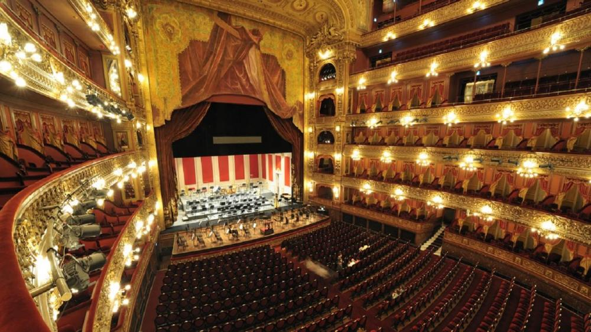
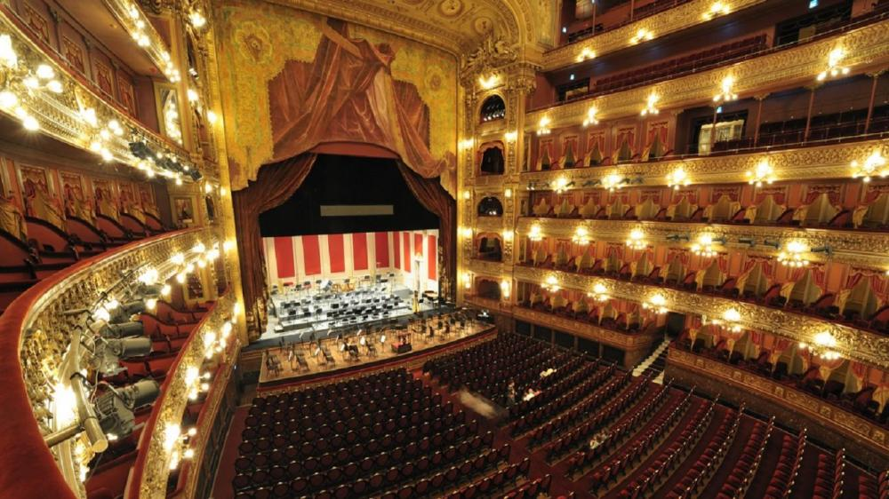
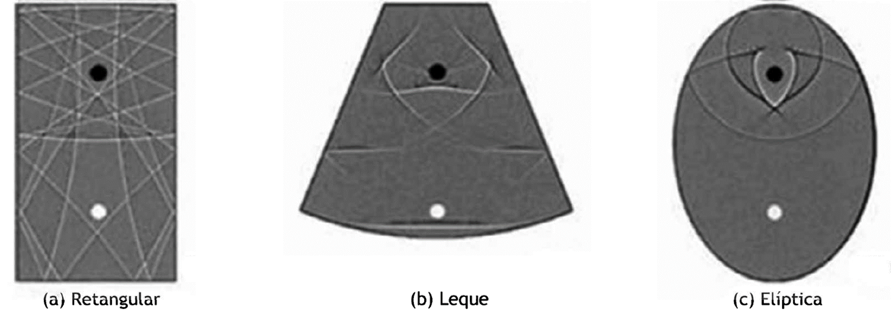
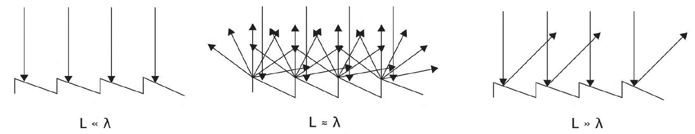

AUDITÓRIOS

 

Auditórios são espaços para comunicação da palavra falada, cantada ou musical. Abrangem desde pequenas salas de aula até grandes salas de concentro. Esses espaços incluem teatros e anfiteatros grego-romanos da Antiguidade.
Quais são os problemas acústicos mais recorrentes nesses espaços?
- Eco e reverberação;
- Ruído de fundo expressivo.
Quais são os principais desafios em projetos?
Estabelecer correlação entre aspectos subjetivos evocados pelos sons e os descritores físicos objetivos aplicáveis. Por exemplo, em uma sala musical, um atributo subjetivo relevante é o público se sentir "envolvido" pela música. Nesse caso, o desafio é:
Como quantificar objetivamente os parâmetros subjetivo?
Foram criadas 2 métricas para traduzir parâmetros subjetivos, com base em dados objetivos: Definição, aplicável a salas para palavra falada; e Clareza, aplicável à salas destinadas à música.
A Definição compara a energia contida no som direto (transmitido diretamente da fonte sonora, e não indiretamente, pelas paredes da sala), mais a energia das reflexões úteis com a energia total da resposta impulsiva.
Sua fundamentação consiste na característica da audição na qual reflexões que atinjam o ouvinte até 50ms após a chegada do som direto são consideradas reflexões úteis, no sentido de que dão suporte ao som direto. Por outro lado, reflexões mais tardias de 50ms são percebidas subjetivamente como eventos sonoros indesejáveis introduzidos pela sala, manifestados como reverberação, ou em períodos maiores, como ecos. A Definição se aplica à compreensão de palavras faladas, estando assim, relacionada às situações de discursos ou palestras.
A Clareza diferencia-se de definição por considerar como reflexões úteis aquelas que atingem o ouvinte até 80ms após o som direto. Em salas de conserto, a Clareza tem sido usada para caracterizar a "transparência" de músicas.
Essas métricas são obtidas a partir da resposta impulsiva, realizada através de uma medição acústica. A imagem abaixo expressa o intervalo de valores dessas grandezas acústicas é tecnicamente aceitável em auditórios.

Outro importante parâmetro acústico, cuja avaliação é levada em consideração principalmente em locais mais amplos, é o fator de força da sala.
O fator de força é um parâmetro que consiste em fornecer a capacidade da sala de "reforçar" o sinal originado pela fonte sonora. Assim, correlaciona-se fortemente com a audibilidade sonora no local, sendo -2dB Corresponde ao nível sonoro total em um determinado ponto da sala, gerado por uma fonte sonora omnidirecional, em relação ao nível sonoro que essa mesma fonte produz em um ponto a 10m em campo livre.

SALAS MUSICAIS
A psicoacústica é o fio condutor que conecta parâmetros objetivos e subjetivos da acústica. Se tratando de projetos acústicos, a psicoacústica aproxima o cliente, que busca expressar suas necessidades através de termos subjetivos (musicais), do profissional de acústica, cujo esforço tem por fim converter a descrição subjetiva em parâmetros objetivos. A partir dessa comunicação facilitada pela psicoacústica, são definidas metas para o projeto. A tabela abaixo apresenta alguns exemplos de descrições subjetivas do som e os parâmetros objetivos com que estão relacionadas:

Algumas considerações:
- Em relação à inteligibilidade da fala, uma sala "seca" é preferível a uma sala reverberante. Entretanto, em situações assim, com absorção sonora demasiada, a Audibilidade tende a ser menor. Dessa forma, percebe-se a importância do equilíbrio acústico entre os parâmetros na análise de projeto do local.
- Alguns dos parâmetros descritos na tabela acima não foram aprofundados na explicação prévia, porém, assim como a Clareza, Definição e Fator de Força, podem ser considerados no dimensionamento do projeto.
- Obviamente o cliente, muitas vezes, em seu esforço para caracterizar sua necessidade, pode usar outros termos para expressar o aspecto subjetivo desejado, porém o conhecimento desses descritores contribui muito para o projetista definir metas e assim, dar um rumo a fim de estabelecer um objetivo desejado para o projeto.
A FORMA DAS SALAS DE CONCERTO
Quando a pressão sonora do som refletido é uniforme em todo o volume de um recinto, chamamos essa característica acústica de campo difuso. Esse conceito é de extrema importância quando avaliamos uma determinada sala de concerto. A imagem abaixo relaciona exemplos de formas de salas de concerto com o campo sonoro decorrente da sua geometria. Para cada representação, o ponto preto indica a fonte sonora (que pode ser um conjunto musical ou um palestrante), em uma extremidade; e o ponto branco, o receptor, sendo ele um ouvinte dentro da sala. As linhas indicam como o som está se distribuindo em cada uma das salas.
O resultado revela que na sala retangular, o campo sonoro naturalmente tem um aspecto mais difuso, ao passo que na sala leque e elíptica, há uma tendência à concentração e ao desenvolvimento de frentes de ondas "defeituosas".
E o que isso significa em termos práticos?
Que o espalhamento do som dentro do ambiente é maior em salas retangulares, e que em projetos de salas leque e elípticas, para um bom campo difuso, é preciso aplicar uma "correção" na geometria problemática (do ponto de vista acústico) da sala. Essa correção pode ser feita através de elementos difusores, que devem ser dimensionados de acordo com a faixa de frequências esperadas em emissões da fonte sonora principal da sala no período de atividade. A imagem abaixo relaciona o comprimento de onda emitido com o tamanho do elemento difusor instalado na sala.
